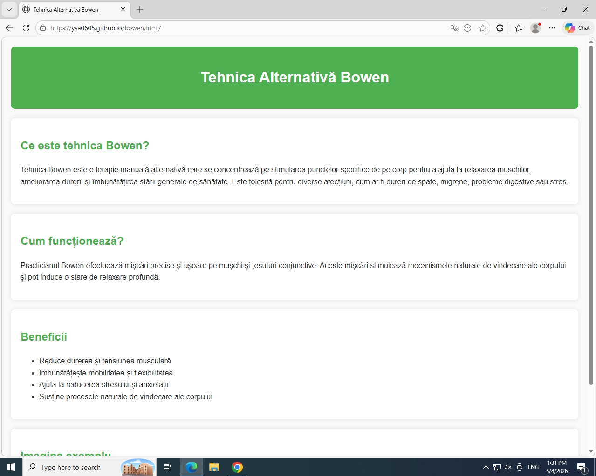

Tehnica Bowen este o terapie manuală alternativă care se concentrează pe stimularea punctelor specifice de pe corp pentru a ajuta la relaxarea mușchilor, ameliorarea durerii și îmbunătățirea stării generale de sănătate. Este folosită pentru diverse afecțiuni, cum ar fi dureri de spate, migrene, probleme digestive sau stres.
Practicianul Bowen efectuează mișcări precise și ușoare pe mușchi și țesuturi conjunctive. Aceste mișcări stimulează mecanismele naturale de vindecare ale corpului și pot induce o stare de relaxare profundă.

Imagine reprezentativă a unei sesiuni de tehnică Bowen.